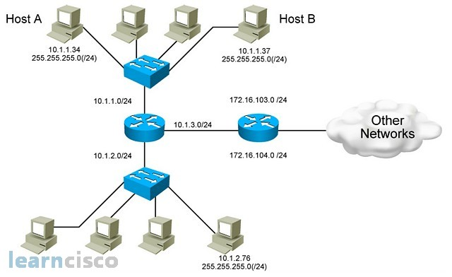
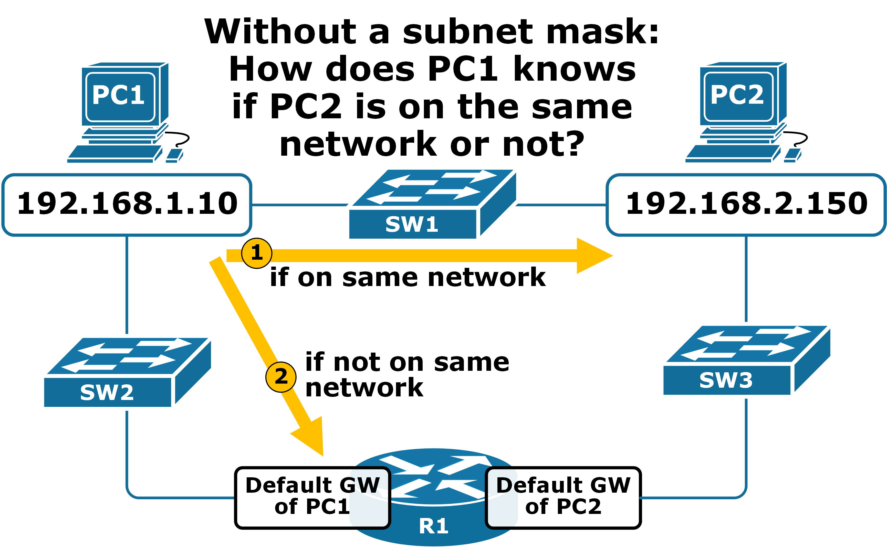
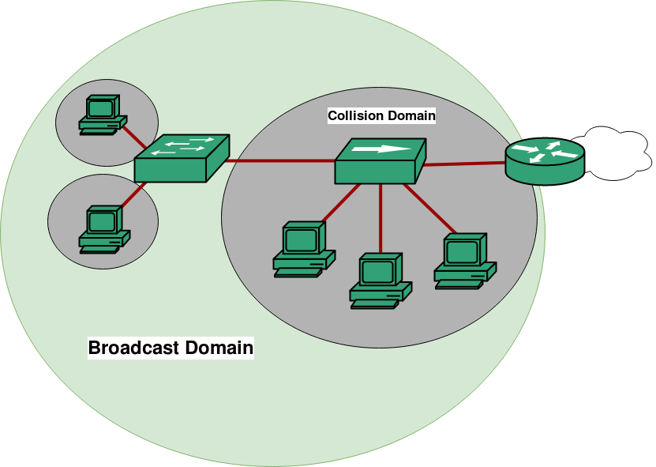
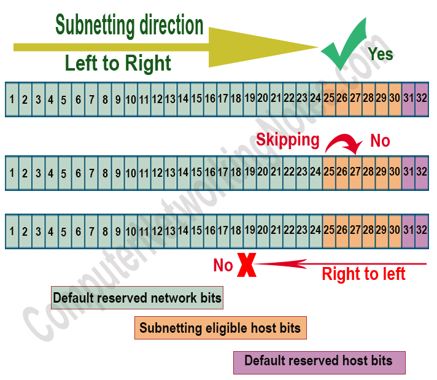

IPv4 Addressing & Subnetting
⭐ CCST GOLD LINE (Remember This First)
Subnetting = Dividing one big network into smaller networks
👉 If you understand this idea, everything below becomes simple ✅
Subnetting = Dividing one big network into smaller networks
👉 If you understand this idea, everything below becomes simple ✅
🔢 What is IPv4 Addressing?
An IPv4 address is a 32-bit number used to identify a device on a network.
📌 Written in dotted decimal format
🧠 Example: 192.168.1.10
• 4 parts (octets)
• Each part: 0–255
• Total = 32 bits (8 + 8 + 8 + 8)
🧠 Example: 192.168.1.10
• 4 parts (octets)
• Each part: 0–255
• Total = 32 bits (8 + 8 + 8 + 8)
🧩 What is a Subnet? (Very Important)
A subnet (sub-network) is a smaller network created from a bigger network.
🧠 Think like this:
🏘️ One big society
Divide it into blocks (A, B, C)
👉 Each block = Subnet
🏘️ One big society
Divide it into blocks (A, B, C)
👉 Each block = Subnet
🔹 Why Subnetting is Needed
- Reduce network traffic
- Improve performance
- Better security
- Easy management
🧱 Subnet Mask (Core Concept)
A subnet mask tells which part of the IP is network and which part is host.
🧠 Example:
IP Address: 192.168.1.10
Subnet Mask: 255.255.255.0
👉 First 3 octets = Network
👉 Last octet = Hosts
IP Address: 192.168.1.10
Subnet Mask: 255.255.255.0
👉 First 3 octets = Network
👉 Last octet = Hosts
Subnet Mask Operation

Common Subnet Masks
📌 Most home networks use 255.255.255.0
| Subnet Mask | Meaning |
|---|---|
| 255.0.0.0 | Class A |
| 255.255.0.0 | Class B |
| 255.255.255.0 | Class C |
✂️ CIDR / Slash Notation (VERY IMPORTANT)
CIDR (Classless Inter-Domain Routing) uses slash notation to show how many bits belong to the network.
🧠 Example:
192.168.1.0/24
👉 24 bits = Network
👉 8 bits = Host
📌 /24 = 255.255.255.0
192.168.1.0/24
👉 24 bits = Network
👉 8 bits = Host
📌 /24 = 255.255.255.0
Subnetting & CIDR Visualization

Common CIDR Values
📌 Usable hosts = Total − 2
| CIDR | Subnet Mask | Total IPs |
|---|---|---|
| /24 | 255.255.255.0 | 256 |
| /25 | 255.255.255.128 | 128 |
| /26 | 255.255.255.192 | 64 |
| /27 | 255.255.255.224 | 32 |
| /28 | 255.255.255.240 | 16 |
📣 Broadcast Address (Very Important)
A broadcast address is the last IP in a subnet, used to send data to all devices.
🧠 Example:
Network: 192.168.1.0/24
Broadcast: 192.168.1.255
👉 Message sent to .255 reaches everyone 📢
Network: 192.168.1.0/24
Broadcast: 192.168.1.255
👉 Message sent to .255 reaches everyone 📢
📡 What is a Broadcast Domain?
A broadcast domain is a group of devices
that receive broadcast messages.
📌 Key rule:
• Switch → same broadcast domain
• Router → breaks broadcast domain
• Switch → same broadcast domain
• Router → breaks broadcast domain
Broadcast Domain Example

🧩 Subnetting Example (Step-by-Step – EASY)
🎯 Requirement
Network: 192.168.1.0/24
Need: 4 subnets
Network: 192.168.1.0/24
Need: 4 subnets
🔹 Step 1: Borrow bits
/24 → /26
Subnet Mask: 255.255.255.192
/24 → /26
Subnet Mask: 255.255.255.192
Subnet Division Direction

🔹 Step 2: Subnets Created
📌 Each subnet = separate broadcast domain
| Subnet | Network | Broadcast | Usable Hosts |
|---|---|---|---|
| 1 | 192.168.1.0 | 192.168.1.63 | .1 – .62 |
| 2 | 192.168.1.64 | 192.168.1.127 | .65 – .126 |
| 3 | 192.168.1.128 | 192.168.1.191 | .129 – .190 |
| 4 | 192.168.1.192 | 192.168.1.255 | .193 – .254 |
🛠️ CCST Troubleshooting Scenarios
| Problem | Likely Issue |
|---|---|
| Devices can’t communicate | Wrong subnet mask |
| Broadcast traffic too high | Large broadcast domain |
| IP conflict | Overlapping subnets |
| Internet works, LAN fails | Subnet misconfiguration |
🧠 Memory Tricks (Exam Gold 🥇)
Subnet = Smaller network
/24 = 255.255.255.0
Broadcast = Last IP
Usable hosts = Total − 2
Router breaks broadcast domain
Subnet = Smaller network
/24 = 255.255.255.0
Broadcast = Last IP
Usable hosts = Total − 2
Router breaks broadcast domain